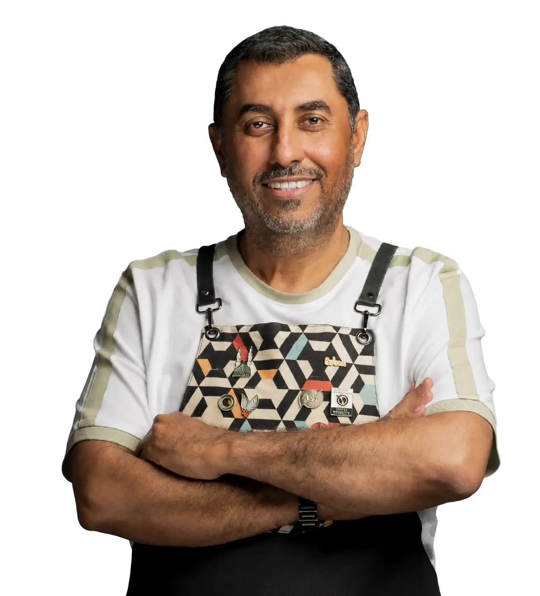
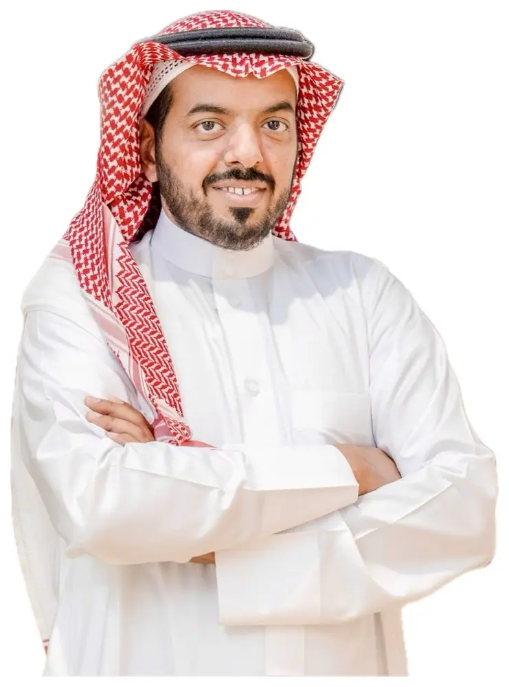
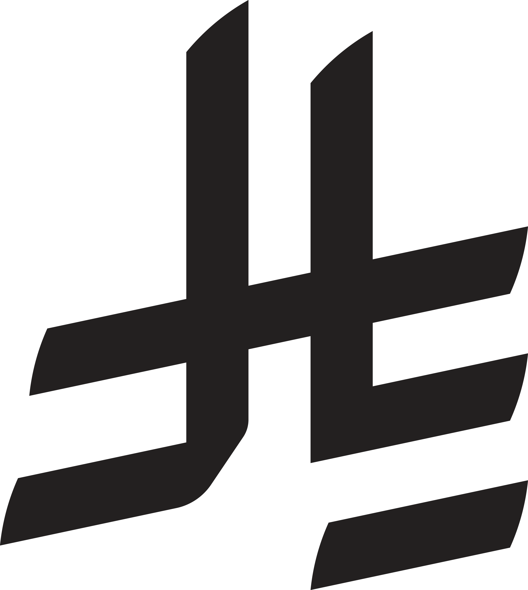
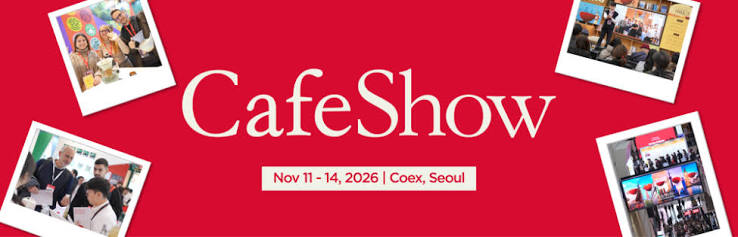

전시회 참가 경험
협회는 시리아, 이집트 및 아랍에미리트의 전시회에 참가하여 지역 식음료 업계에 대한 현장 경험을 쌓았습니다.
전문가 커뮤니티, 지역별·분야별 커뮤니티 및 디지털 채널을 통해 레스토랑·카페 업계를 지원하는 비영리 협회입니다.
대표단은 레스토랑·카페 오너, 로스터리 운영자, 운영·구매·사업 개발 담당 리더를 중심으로 구성할 예정입니다. 최종 대표단 구성은 방문 전에 확정합니다.
7,000+는 협회 전체 회원 규모이며 방문 대표단 인원수가 아닙니다. 최종 대표단 구성은 별도로 확정됩니다.
본 파트너십의 핵심 시장은 사우디아라비아입니다. 협회는 걸프와 중동 전역에서 쌓은 경험을 바탕으로 지역 운영자의 실무 수요를 고려한 제품 논의를 지원할 수 있습니다.
협회는 시리아, 이집트 및 아랍에미리트의 전시회에 참가하여 지역 식음료 업계에 대한 현장 경험을 쌓았습니다.
협회 회원들은 중동 지역에서 지점을 운영하고 있습니다. 이러한 운영 경험은 제품 적합성, 서비스 및 후속 논의에 필요한 질문을 구체화하는 데 도움이 될 수 있습니다.
커피 전문성과 비즈니스 조율 역량을 바탕으로 운영자와 후원사의 실무 관심사를 방문 프로그램에 연결합니다.


거버넌스·사업개발 자문가이자 레스토랑·카페 소유주 협회 이사회 위원입니다. 방문 일정과 참여 기관과의 관계를 조율하고, 운영자의 필요와 후원사에 관련된 비즈니스 논의를 프로그램에 연결합니다.
대표단은 특별 초청 인사 알리 알디와니의 커피 전문성과 나이프 알모함마디가 이끄는 비즈니스 조율 역량을 함께 갖추고 있습니다. 후원 목적에 맞는 승인된 발표·대담·커뮤니케이션 권리를 선택하세요.

200,000대표단 참가자에게 솔루션을 소개하고 협회의 기존 업계 대화 프로그램에 참여할 수 있습니다.
대표단 대상 제품 소개와 협회의 업계 대화 프로그램 참여 기회를 결합합니다.
협회 Snapchat과 회원 커뮤니케이션 및 홍보 채널을 통해 솔루션을 소개할 수 있습니다.
주요 후원 대비 전략 후원은 대표단 대상 발표(10분→20분), Snapchat 소개(5분→10분), Hospitality Meetings(2회→4회), X 스페이스(1회→2회), Hospitality Coffee(2회→4회)를 두 배로 제공합니다. 전자 브로슈어 배포, 연차 보고서 및 YouTube 영상 로고, 이사회 의장 또는 대리인의 감사 표창도 추가됩니다. WhatsApp 커뮤니티 20곳에 보내는 후원사 메시지는 두 등급에서 동일합니다.
해당되는 경우 부가가치세가 추가됩니다.
Hospitality Meetings와 Hospitality Coffee는 협회가 운영하는 전문 대담 프로그램입니다. 표의 횟수는 게스트 출연 횟수이며 주제와 형식은 계약에서 정합니다.
| 제공 사항 | 전략 후원사 | 메인 후원사 | 협력 후원사 |
|---|---|---|---|
| 대표단 참가자 대상 제품 소개 | 20분 | 10분 | 해당 없음 |
| 협회 Snapchat 제품 소개 출연 | 10분 | 5분 | 2분 |
| 운영자 대화 프로그램 게스트 출연 | 4회 | 2회 | 해당 없음 |
| X Spaces 게스트 출연 | 2회 | 1회 | 해당 없음 |
| 커피 대화 프로그램 게스트 출연 | 4회 | 2회 | 해당 없음 |
| 20개 WhatsApp 커뮤니티 후원사 메시지 | 20개 커뮤니티에 메시지 1건 | 20개 커뮤니티에 메시지 1건 | 해당 없음 |
| WhatsApp 커뮤니티 전자 브로슈어 배포 | 포함 | 해당 없음 | 해당 없음 |
| 연간 보고서 로고 | 포함 | 해당 없음 | 해당 없음 |
| 분기 보고서 로고 | 포함 | 포함 | 포함 |
| 방문 웹사이트 로고 | 포함 | 포함 | 포함 |
| 협회 X 계정 행사 보도 | 포함 | 포함 | 해당 없음 |
| YouTube 행사 영상 로고 | 포함 | 해당 없음 | 해당 없음 |
| 이사회 의장 또는 지정 대표의 감사 표창 | 포함 | 해당 없음 | 해당 없음 |
| 2026년 연례 행사 초청 및 감사 표창 | 포함 | 포함 | 해당 없음 |
후원사는 해당 등급에 포함된 발표와 소개를 위한 제품 정보를 준비합니다. 협회 프로그램의 주제, 발표자, 형식 및 일정은 후원 계약에서 정합니다.
후원사는 등급에 맞는 승인된 로고, 브로슈어 또는 메시지를 제공하고 협회는 지정 채널에서 게시·배포합니다. 회원 연락처는 협회가 보유합니다. 인플루언서 우대 요금 혜택은 해당 요금 이용 기회를 의미하며, 실제 협업과 비용은 별도로 합의합니다.
게시물 링크, 화면 캡처, 제작물 사본 또는 확보 가능한 활동 기록 등 이행 증빙 방식을 계약에 명시합니다. 증빙 형식, 담당 업무 및 일정은 실행 전에 합의합니다.
선택한 등급에 따라 후원 권리가 정해지며 일정, 형식, 자료와 증빙은 서면으로 확정합니다. 소개 주선에는 상호 관심과 동의가 필요합니다. 후원은 매출, 구매자 수 또는 특정 반응을 보장하지 않습니다. 대표단 인사의 참여는 개인 광고, 제품 추천 또는 후원사 전용 세션에 대한 동의를 의미하지 않으며, 별도 동의가 필요합니다.
숙박이나 전문 통역 등 대표단의 실제 비용을 직접 부담하는 현물 기여는 별도로 논의할 수 있습니다. 기여 내용과 관련 제공 사항은 서면으로 확정합니다.
선택한 등급의 제품 소개 및 미디어 출연 기회를 활용해 작업 흐름, 교육, 유지보수 및 서비스 요건을 설명할 수 있습니다.
포함된 협회 게시 활동에 적합한 아랍어 제품 정보를 협의합니다. 표현과 자료는 양측이 승인합니다.
상호 관심과 동의가 있는 경우 협회가 후속 대화를 위한 교류를 지원할 수 있습니다. 상업적 결정은 당사자가 내립니다.
제공 활동은 선택한 등급에 따릅니다. 날짜, 콘텐츠 및 형식은 서면 후원 범위에 따라 조율합니다.
후원 일정과 관련 제품 정보를 협의합니다. 포함된 안내 메시지와 해당 등급의 후원사 메시지 및 브로슈어를 활용해 솔루션을 소개합니다.
포함된 제품 소개 및 Snapchat 출연 기회로 제품 적합성과 운영 요건을 설명합니다. 협회가 대표단 프로그램과 조율합니다.
등급에 포함된 나머지 프로그램 출연, 게시 및 로고 게재를 이행합니다. 상호 관심과 명시적 동의가 있으면 추가 교류를 지원할 수 있습니다.
공급업체는 작업 흐름, 품질 일관성 및 서비스 요건을 시연하고 사우디 카페 운영에 대한 적합성을 논의할 수 있습니다. 후속 대화에서는 관심 있는 운영자의 질문과 자체 검토에 필요한 정보를 다룰 수 있습니다.
이미 협의된 초청 방문은 기존 조건에 따라 방문 프로그램의 일부로 진행됩니다. 추가 파트너십 활동은 별도로 논의합니다.
방문 프로그램은 전시회 탐색, 전문적인 대화 및 기업 방문으로 구성됩니다. 파트너십 활동은 대표단 일정과 조율합니다.

제품 소개, 주요 활용 사례 및 희망 등급을 알려주세요. 제공 사항, 후원 일정, 콘텐츠 및 역할을 서면으로 확정할 수 있습니다.